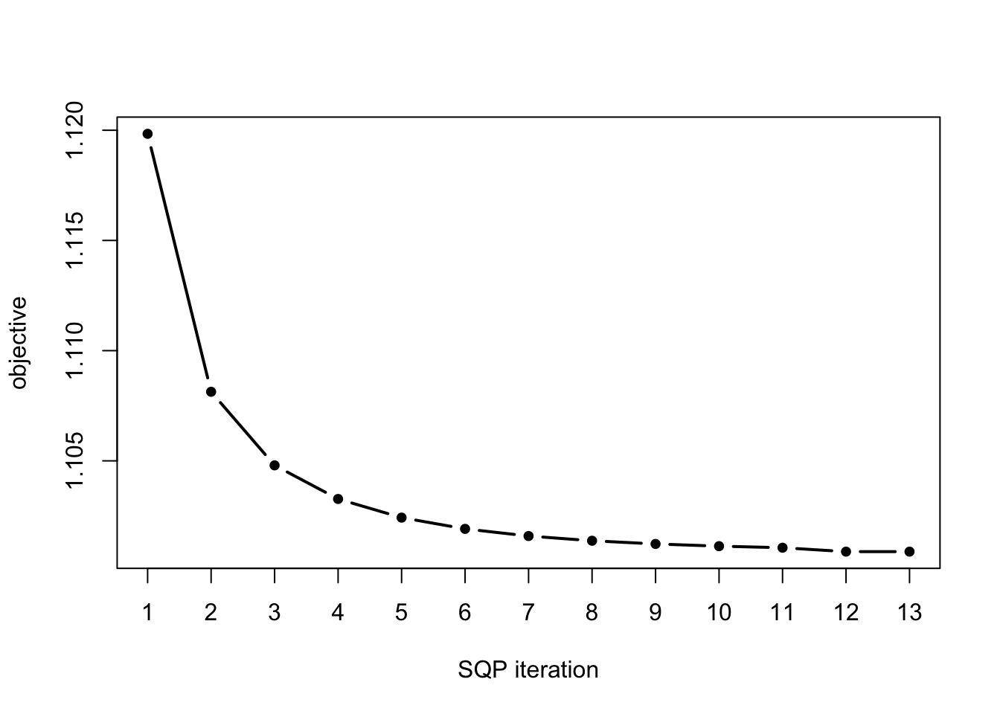
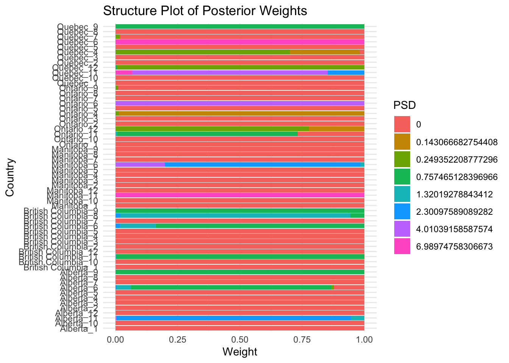
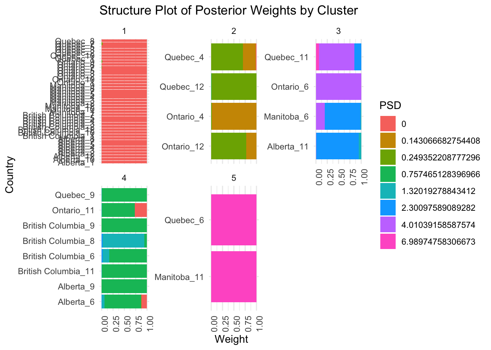
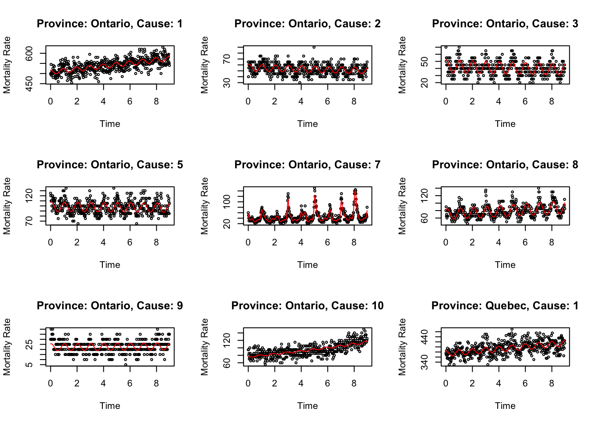
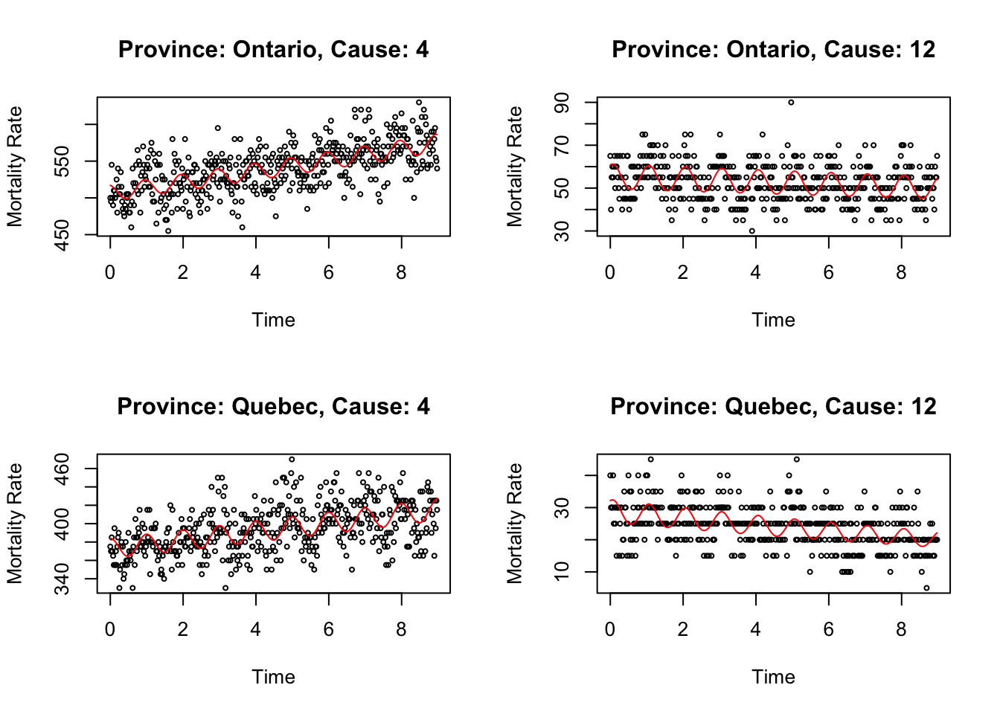
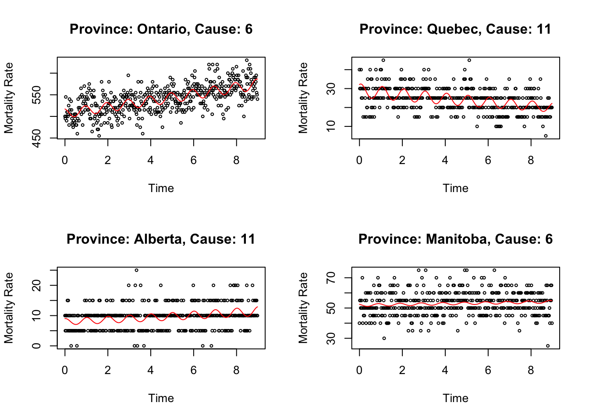
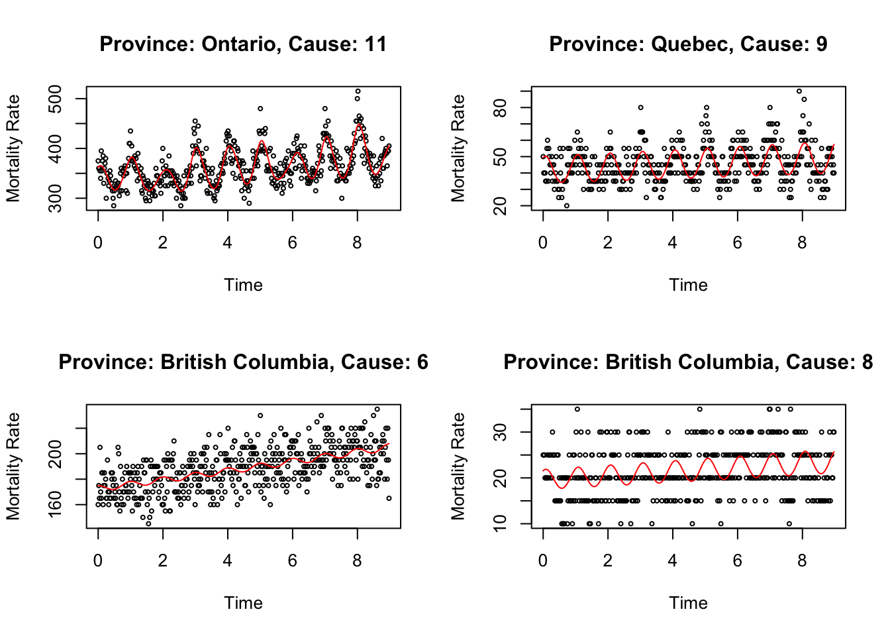
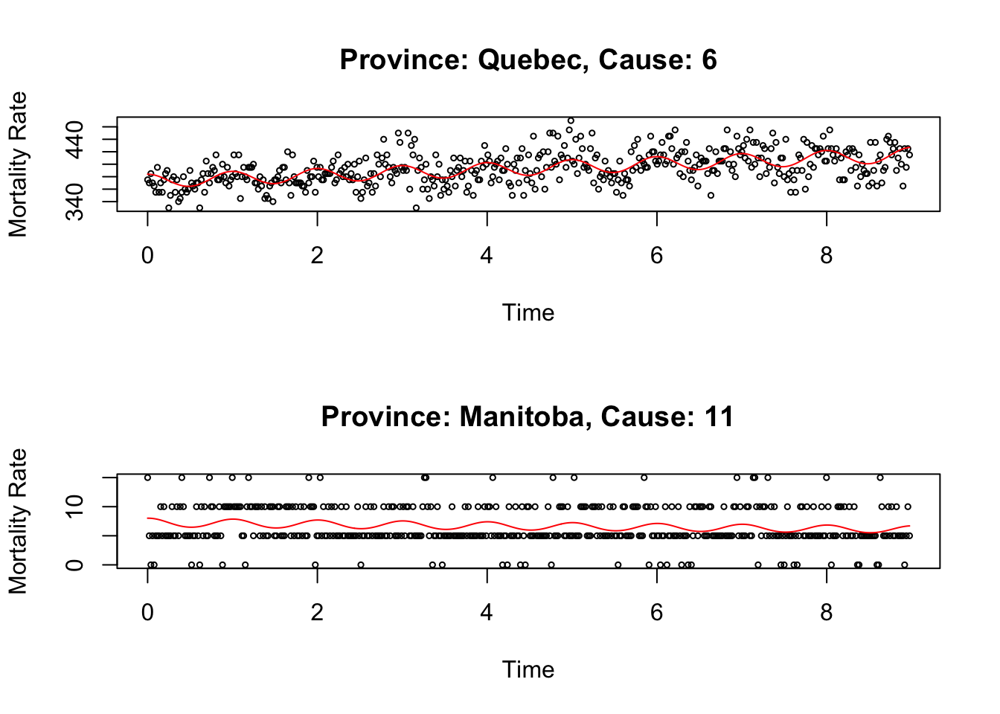

Last updated: 2024-05-11
Checks: 6 1
Knit directory: FASHresultsummary/
This reproducible R Markdown analysis was created with workflowr (version 1.7.1). The Checks tab describes the reproducibility checks that were applied when the results were created. The Past versions tab lists the development history.
The R Markdown is untracked by Git. To know which version of the R
Markdown file created these results, you’ll want to first commit it to
the Git repo. If you’re still working on the analysis, you can ignore
this warning. When you’re finished, you can run
wflow_publish to commit the R Markdown file and build the
HTML.
Great job! The global environment was empty. Objects defined in the global environment can affect the analysis in your R Markdown file in unknown ways. For reproduciblity it’s best to always run the code in an empty environment.
The command set.seed(20240507) was run prior to running
the code in the R Markdown file. Setting a seed ensures that any results
that rely on randomness, e.g. subsampling or permutations, are
reproducible.
Great job! Recording the operating system, R version, and package versions is critical for reproducibility.
Nice! There were no cached chunks for this analysis, so you can be confident that you successfully produced the results during this run.
Great job! Using relative paths to the files within your workflowr project makes it easier to run your code on other machines.
Great! You are using Git for version control. Tracking code development and connecting the code version to the results is critical for reproducibility.
The results in this page were generated with repository version 8233390. See the Past versions tab to see a history of the changes made to the R Markdown and HTML files.
Note that you need to be careful to ensure that all relevant files for
the analysis have been committed to Git prior to generating the results
(you can use wflow_publish or
wflow_git_commit). workflowr only checks the R Markdown
file, but you know if there are other scripts or data files that it
depends on. Below is the status of the Git repository when the results
were generated:
Ignored files:
Ignored: .DS_Store
Ignored: .Rhistory
Ignored: .Rproj.user/
Ignored: analysis/.DS_Store
Ignored: analysis/.Rhistory
Ignored: code/.DS_Store
Ignored: code/cpp/.DS_Store
Ignored: code/function/.DS_Store
Ignored: output/.DS_Store
Ignored: output/example/.DS_Store
Ignored: output/example/figure/
Ignored: output/simulation/.DS_Store
Ignored: output/simulation/figure/
Untracked files:
Untracked: analysis/cause-specific.Rmd
Untracked: code/cpp/Gaussian_just_fixed.o
Untracked: code/cpp/Gaussian_just_fixed.so
Untracked: code/cpp/Gaussian_theta_known.o
Untracked: code/cpp/Gaussian_theta_known.so
Untracked: code/cpp/Poisson_causes.cpp
Untracked: code/cpp/Poisson_causes.o
Untracked: code/cpp/Poisson_causes.so
Untracked: code/cpp/Poisson_covid.o
Untracked: code/cpp/Poisson_covid.so
Untracked: code/cpp/Poisson_just_fixed_causes.cpp
Untracked: code/cpp/Poisson_just_fixed_causes.o
Untracked: code/cpp/Poisson_just_fixed_causes.so
Untracked: code/cpp/Poisson_just_fixed_covid.o
Untracked: code/cpp/Poisson_just_fixed_covid.so
Untracked: code/function/functions_fitting_Poisson_causes.R
Untracked: data/13100810.csv
Untracked: data/13100810_MetaData.csv
Untracked: data/X13100810.eng.zip
Untracked: output/causes/
Unstaged changes:
Modified: analysis/covid_example.Rmd
Deleted: code/function/functions_fitting_Poisson.R
Note that any generated files, e.g. HTML, png, CSS, etc., are not included in this status report because it is ok for generated content to have uncommitted changes.
There are no past versions. Publish this analysis with
wflow_publish() to start tracking its development.
#### Data:
deadFile = Pmisc::downloadIfOld("https://www150.statcan.gc.ca/n1/tbl/csv/13100810-eng.zip",
path = paste0(data_dir))Loading required namespace: R.utils(deadFileCsv = deadFile[which.max(file.info(deadFile)$size)])[1] "/Users/ziangzhang/Desktop/FASH/FASHresultsummary/data/13100810.csv"all_data = read.csv(deadFileCsv)
all_data$date = as.Date(as.character(all_data[[grep("DATE", names(all_data))]]))
all_data$province = gsub("[,].*", "", all_data$GEO)
all_data <- all_data %>% select(date, province, Cause.of.death..ICD.10.., VALUE)Question of interest: For the five largest provinces in Canada, what are the mortality rates for the selected causes of death?
selected_causes <- unique(all_data$Cause.of.death..ICD.10..)[c(2:11,16,18)]
provinces_selected <- c("Ontario", "Quebec", "British Columbia", "Alberta", "Manitoba")
provinces_data_selected <- all_data %>% filter(province %in% provinces_selected, date <= as.Date("2019-01-01"), `Cause.of.death..ICD.10..` %in% selected_causes)
colnames(provinces_data_selected)[4] <- "y"num_knots <- 30
region <- c(0,9)
provinces_data_selected$x <- (as.numeric(provinces_data_selected$date)/365) - (min(as.numeric(provinces_data_selected$date))/365)
datasets <- list()
# store all the datasets to study, at each pro and for each cause
for (i in 1:length(provinces_selected)){
datasets[[i]] <- list()
for (j in 1:length(selected_causes)){
datasets[[i]][[j]] <- provinces_data_selected %>% filter(province == provinces_selected[[i]], `Cause.of.death..ICD.10..` == selected_causes[[j]])
}
names(datasets[[i]]) <- selected_causes
}
names(datasets) <- provinces_selectedlog_prec <- seq(-5,5, length.out = 10)
psd_vec <- sort(c(0,exp(-.5*log_prec)))
L_matrix_list <- c()
for (province in provinces_selected) {
L_vecs <- mclapply(datasets[[province]], function(dataset) {
compute_log_likelihood_sBspline_seq(
dataset = dataset,
num_knots = num_knots,
psd_vector = psd_vec,
pred_step = 5,
betaprec = 0.0001,
region = region
)}, mc.cores = 6)
L_matrix_list[[province]] <- do.call(rbind, L_vecs)
}
L_matrix <- do.call(rbind, L_matrix_list)fit.sqp <- mixsqp(L = L_matrix, log = TRUE)Running mix-SQP algorithm 0.3-54 on 60 x 11 matrix
convergence tol. (SQP): 1.0e-08
conv. tol. (active-set): 1.0e-10
zero threshold (solution): 1.0e-08
zero thresh. (search dir.): 1.0e-14
l.s. sufficient decrease: 1.0e-02
step size reduction factor: 7.5e-01
minimum step size: 1.0e-08
max. iter (SQP): 1000
max. iter (active-set): 12
number of EM iterations: 10
Computing SVD of 60 x 11 matrix.
Matrix is not low-rank; falling back to full matrix.
iter objective max(rdual) nnz stepsize max.diff nqp nls
1 +1.119838256e+00 -- EM -- 11 1.00e+00 6.02e-01 -- --
2 +1.108132822e+00 -- EM -- 11 1.00e+00 1.46e-02 -- --
3 +1.104796017e+00 -- EM -- 11 1.00e+00 5.02e-03 -- --
4 +1.103270147e+00 -- EM -- 11 1.00e+00 2.87e-03 -- --
5 +1.102424530e+00 -- EM -- 11 1.00e+00 1.87e-03 -- --
6 +1.101913736e+00 -- EM -- 10 1.00e+00 1.42e-03 -- --
7 +1.101589110e+00 -- EM -- 10 1.00e+00 1.06e-03 -- --
8 +1.101375031e+00 -- EM -- 10 1.00e+00 7.71e-04 -- --
9 +1.101229859e+00 -- EM -- 10 1.00e+00 5.53e-04 -- --
10 +1.101129384e+00 -- EM -- 10 1.00e+00 3.95e-04 -- --
1 +1.101058833e+00 +4.879e-03 10 ------ ------ -- --
2 +1.100881026e+00 +7.504e-06 8 1.00e+00 9.98e-04 4 1
3 +1.100881026e+00 -1.561e-08 8 1.00e+00 2.60e-06 2 1
Optimization took 0.00 seconds.
Convergence criteria met---optimal solution found.numiter <- nrow(fit.sqp$progress)
plot(1:numiter,fit.sqp$progress$objective,type = "b",
pch = 20,lwd = 2,xlab = "SQP iteration",
ylab = "objective",xaxp = c(1,numiter,numiter - 1))
prior_weight <- data.frame(psd = psd_vec, prior_weight = fit.sqp$x)num_weights <- sum(prior_weight$prior_weight != 0)
# Loop through each dataset and perform fitting
fitted_datasets <- list()
posterior_weights_matrix_list <- list()
for (province in provinces_selected) {
fitted_datasets[[province]] <- list()
posterior_weights_matrix_list[[province]] <- matrix(nrow = length(selected_causes), ncol = num_weights)
for (j in 1:length(selected_causes)) {
fit_result <- fit_sBspline_with_prior(
y = datasets[[province]][[j]]$y,
x = datasets[[province]][[j]]$x,
num_knots = num_knots,
pred_step = 5,
betaprec = 0.0001,
region = region,
prior_weight = prior_weight
)
posterior_weights_matrix_list[[province]][j,] <- fit_result$posterior_weights[, "posterior_weight"]
fitted_datasets[[province]][[j]] <- aggregate_fit_with_prior(x = datasets[[province]][[j]]$x, fit_results_with_prior = fit_result, original = TRUE)$summary_df
}
}## reduce posterior_weights_matrix_list to a single matrix
posterior_weights_matrix <- do.call(rbind, posterior_weights_matrix_list)
posterior_weights_df <- as.data.frame(posterior_weights_matrix)
posterior_weights_df$province <- rep(provinces_selected, each = length(selected_causes))
posterior_weights_df$cause <- rep(c(1:12), length(provinces_selected))
posterior_weights_df$id <- paste0(posterior_weights_df$province, "_", posterior_weights_df$cause)
colnames(posterior_weights_df)[1:8] <- prior_weight$psd[prior_weight$prior_weight != 0]
melted_data <- melt(posterior_weights_df[,c(1:8,11)], id.vars = "id")
ggplot(melted_data, aes(x = as.factor(id), y = value, fill = variable)) +
geom_bar(stat = "identity") +
labs(x = "Country", y = "Weight", fill = "PSD") +
theme_minimal() +
ggtitle("Structure Plot of Posterior Weights") +
coord_flip()
# Normalize the data
wide_data <- scale(posterior_weights_matrix)
# Perform hierarchical clustering
d <- dist(wide_data, method = "euclidean") # Distance matrix
fit <- hclust(d, method = "ward.D2") # Clustering
clusters <- cutree(fit, k = 5)
posterior_weights_df$cluster <- clusters
melted_data <- melt(posterior_weights_df[,c(1:8,11,12)], id.vars = c("id", "cluster"))
melted_data <- melted_data %>% arrange(cluster)
ggplot(melted_data, aes(x = id, y = value, fill = variable)) +
geom_bar(stat = "identity") +
facet_wrap(~cluster, scales = "free_y") + # Facet by cluster
labs(x = "Country", y = "Weight", fill = "PSD") +
theme_minimal() +
theme(axis.text.x = element_text(angle = 90, hjust = 1)) + # Rotate x-axis labels for better readability
ggtitle("Structure Plot of Posterior Weights by Cluster") +
coord_flip() 
Let’s visualize four example smoothing result for each cluster. For cluster 1:
cluster1 <- posterior_weights_df %>% filter(cluster == 1)
cluster1$cause <- as.factor(cluster1$cause)
par(mfrow = c(3,3))
for (i in 1:9) {
plot(fitted_datasets[[cluster1$province[i]]][[cluster1$cause[i]]]$x, datasets[[cluster1$province[i]]][[cluster1$cause[i]]]$y, type = "p", col = "black", xlab = "Time", ylab = "Mortality Rate", main = paste0("Province: ", cluster1$province[i], ", Cause: ", cluster1$cause[i]), cex = 0.5)
lines(fitted_datasets[[cluster1$province[i]]][[cluster1$cause[i]]]$x, fitted_datasets[[cluster1$province[i]]][[cluster1$cause[i]]]$mean, col = "red")
}
For cluster 2:
cluster2 <- posterior_weights_df %>% filter(cluster == 2)
cluster2$cause <- as.factor(cluster2$cause)
par(mfrow = c(2,2))
for (i in 1:4) {
plot(fitted_datasets[[cluster2$province[i]]][[cluster2$cause[i]]]$x, datasets[[cluster2$province[i]]][[cluster2$cause[i]]]$y, type = "p", col = "black", xlab = "Time", ylab = "Mortality Rate", main = paste0("Province: ", cluster2$province[i], ", Cause: ", cluster2$cause[i]), cex = 0.5)
lines(fitted_datasets[[cluster2$province[i]]][[cluster2$cause[i]]]$x, fitted_datasets[[cluster2$province[i]]][[cluster2$cause[i]]]$mean, col = "red")
}
For cluster 3:
cluster3 <- posterior_weights_df %>% filter(cluster == 3)
cluster3$cause <- as.factor(cluster3$cause)
par(mfrow = c(2,2))
for (i in 1:4) {
plot(fitted_datasets[[cluster3$province[i]]][[cluster3$cause[i]]]$x, datasets[[cluster3$province[i]]][[cluster3$cause[i]]]$y, type = "p", col = "black", xlab = "Time", ylab = "Mortality Rate", main = paste0("Province: ", cluster3$province[i], ", Cause: ", cluster3$cause[i]), cex = 0.5)
lines(fitted_datasets[[cluster3$province[i]]][[cluster3$cause[i]]]$x, fitted_datasets[[cluster3$province[i]]][[cluster3$cause[i]]]$mean, col = "red")
}
For cluster 4:
cluster4 <- posterior_weights_df %>% filter(cluster == 4)
cluster4$cause <- as.factor(cluster4$cause)
par(mfrow = c(2,2))
for (i in 1:4) {
plot(fitted_datasets[[cluster4$province[i]]][[cluster4$cause[i]]]$x, datasets[[cluster4$province[i]]][[cluster4$cause[i]]]$y, type = "p", col = "black", xlab = "Time", ylab = "Mortality Rate", main = paste0("Province: ", cluster4$province[i], ", Cause: ", cluster4$cause[i]), cex = 0.5)
lines(fitted_datasets[[cluster4$province[i]]][[cluster4$cause[i]]]$x, fitted_datasets[[cluster4$province[i]]][[cluster4$cause[i]]]$mean, col = "red")
}
For cluster 5:
cluster5 <- posterior_weights_df %>% filter(cluster == 5)
cluster5$cause <- as.factor(cluster5$cause)
par(mfrow = c(2,1))
for (i in 1:2) {
plot(fitted_datasets[[cluster5$province[i]]][[cluster5$cause[i]]]$x, datasets[[cluster5$province[i]]][[cluster5$cause[i]]]$y, type = "p", col = "black", xlab = "Time", ylab = "Mortality Rate", main = paste0("Province: ", cluster5$province[i], ", Cause: ", cluster5$cause[i]), cex = 0.5)
lines(fitted_datasets[[cluster5$province[i]]][[cluster5$cause[i]]]$x, fitted_datasets[[cluster5$province[i]]][[cluster5$cause[i]]]$mean, col = "red")
}
sessionInfo()R version 4.3.1 (2023-06-16)
Platform: aarch64-apple-darwin20 (64-bit)
Running under: macOS Monterey 12.7.4
Matrix products: default
BLAS: /Library/Frameworks/R.framework/Versions/4.3-arm64/Resources/lib/libRblas.0.dylib
LAPACK: /Library/Frameworks/R.framework/Versions/4.3-arm64/Resources/lib/libRlapack.dylib; LAPACK version 3.11.0
locale:
[1] en_US.UTF-8/en_US.UTF-8/en_US.UTF-8/C/en_US.UTF-8/en_US.UTF-8
time zone: America/Toronto
tzcode source: internal
attached base packages:
[1] parallel splines stats graphics grDevices utils datasets
[8] methods base
other attached packages:
[1] lubridate_1.9.3 forcats_1.0.0 stringr_1.5.0 dplyr_1.1.3
[5] purrr_1.0.2 readr_2.1.4 tidyr_1.3.0 tibble_3.2.1
[9] tidyverse_2.0.0 mixsqp_0.3-54 reshape2_1.4.4 ggplot2_3.5.1
[13] Matrix_1.6-3 TMB_1.9.7 BayesGP_0.1.1
loaded via a namespace (and not attached):
[1] sass_0.4.7 utf8_1.2.3 generics_0.1.3 stringi_1.7.12
[5] lattice_0.21-8 hms_1.1.3 digest_0.6.33 magrittr_2.0.3
[9] timechange_0.2.0 evaluate_0.22 grid_4.3.1 fastmap_1.1.1
[13] R.oo_1.26.0 rprojroot_2.0.3 workflowr_1.7.1 plyr_1.8.9
[17] jsonlite_1.8.7 R.utils_2.12.3 promises_1.2.1 fansi_1.0.5
[21] scales_1.3.0 jquerylib_0.1.4 cli_3.6.1 rlang_1.1.1
[25] R.methodsS3_1.8.2 munsell_0.5.0 withr_2.5.1 cachem_1.0.8
[29] yaml_2.3.7 Pmisc_0.3.3 tools_4.3.1 tzdb_0.4.0
[33] colorspace_2.1-0 httpuv_1.6.11 vctrs_0.6.4 R6_2.5.1
[37] lifecycle_1.0.3 git2r_0.33.0 fs_1.6.3 irlba_2.3.5.1
[41] pkgconfig_2.0.3 pillar_1.9.0 bslib_0.5.1 later_1.3.1
[45] gtable_0.3.4 glue_1.6.2 Rcpp_1.0.11 xfun_0.40
[49] tidyselect_1.2.0 rstudioapi_0.15.0 knitr_1.44 farver_2.1.1
[53] htmltools_0.5.6.1 labeling_0.4.3 rmarkdown_2.25 compiler_4.3.1